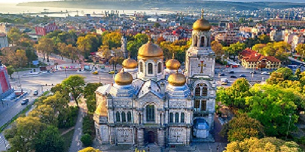

Софи́я (болг. Со́фия [ˈsɔfijə], от греч. σοφία — мастерство, мудрость) — столица и крупнейший город Болгарии. Административный центр городской области София и его единственной общины Столична. Население — 1,41 млн человек (2020 год), тогда как население всей общины составляет 1,5 млн человек. Согласно переписи 2011 года около 91,4 % всех жителей составляют этнические болгары, а во всей общине Столична этот процент достигает около 96,4 %. Расположена на западе Болгарии, на южной окраине Софийской котловины, у подножия горного массива Витоша. Климат умеренно континентальный.
Узел железных дорог, международный аэропорт, метрополитен (с 1998 года), трамвай, троллейбус. В Софии сосредоточено около 1/6 общеболгарского промышленного производства (машиностроение, металлургия, химическая, резиновая, целлюлозно-бумажная, пищевкусовая, лёгкая промышленность). В XVI—XVIII веках являлся вторым после Константинополя торговым центром Балканского полуострова. С 1879 года — столица независимой Болгарии.
